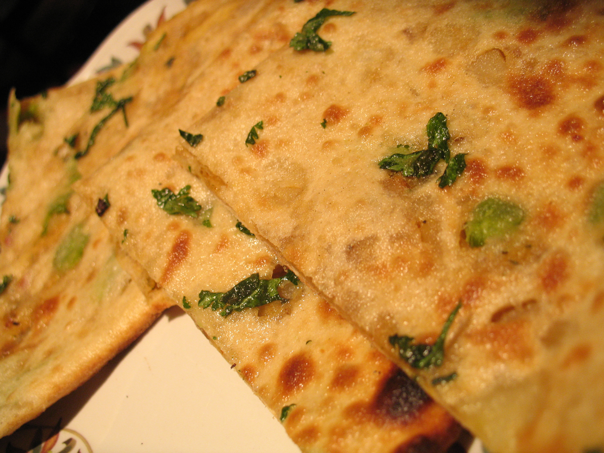

1. Recipes/Aloo paratha

Little Description
Aloo paratha is a delicious and popular Indian flatbread stuffed with a spiced potato mixture.
It's perfect for breakfast or as a side dish for any meal.
Ingredients
Potato, Ghee, Atta, Garam masala, Red chilli powder, Coriander,
Salt, Cumin seeds, Green chilli, Ginger
Steps to make
- Boiled 2-3 potatoes until they become soft and cooked
- Remove there shell and mashed them
- Add chopped chili, Ginger, salt, Garam masala according to taste
and mix them well
- In a boll take wheat, add little salt, oil and ghee, add water and
prepare a soft dough
.Leave it for 10-15 min
- Take a part of dough, roll it out in a small circle with 3-4mm width
- Add a part of stuffing on it, closed it well and again roll it like a bread
- Use extra wheat i case of it break or stick during the rolling
- Heat a tava, put it on tava and cooked the both sides, try to turn in 30-40 second
add oil/Ghee on each side and cooked for 10-15 second more
- Your Aloo paratha is ready, serve it with any sauce or your choice
Don't forget to check other recipes